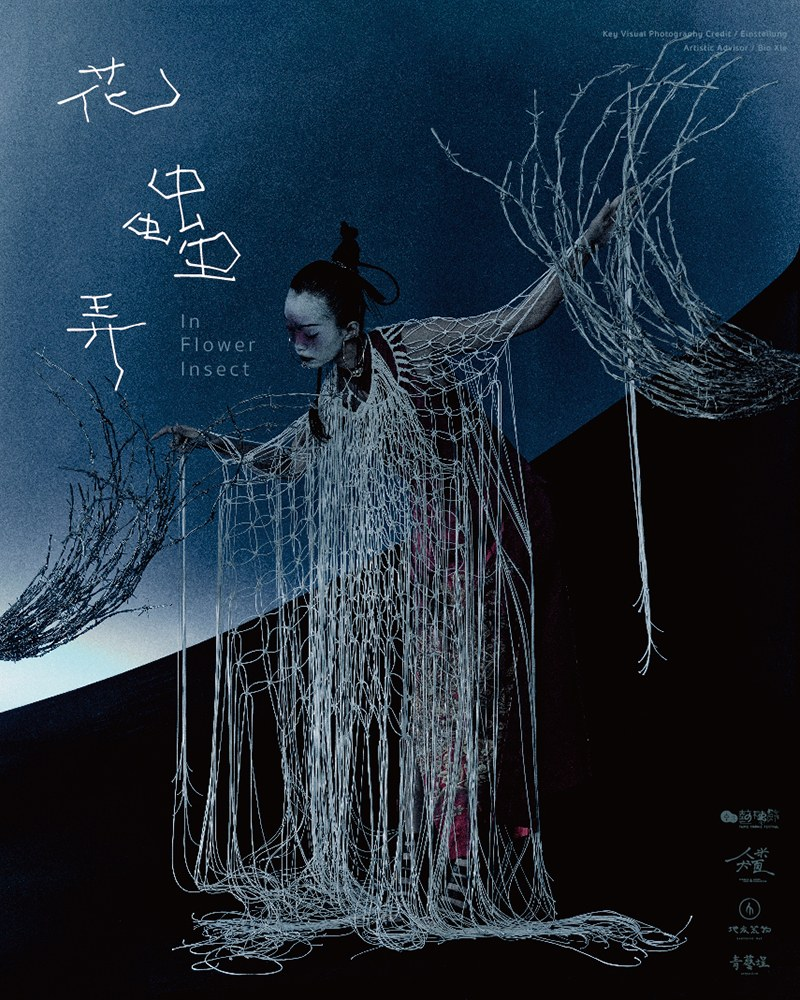
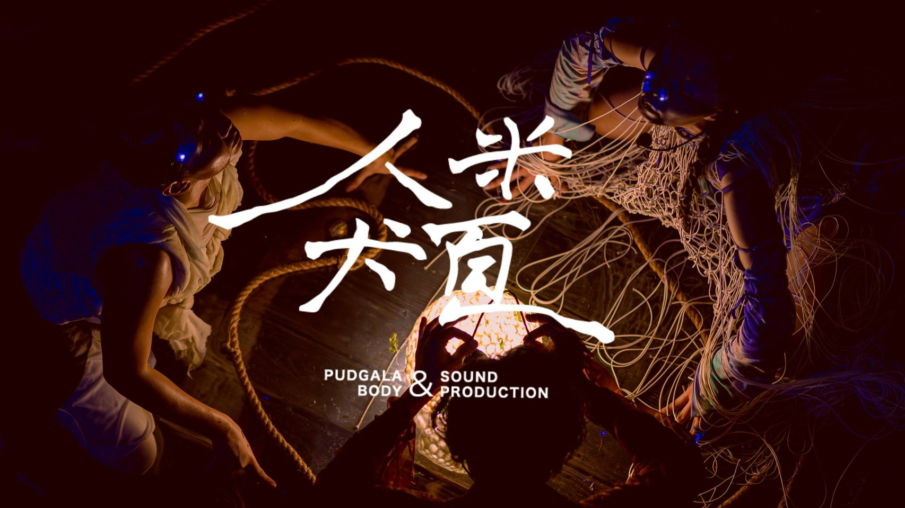

Series / 2024-2025
Series / 2024-2025
《花蟲弄》以花、蟲、身體與城市感知作為創作核心，透過舞蹈建立介於日常與異質狀態之間的觀看經驗。
2025 年受邀白晝之夜發展《蛹塚》，延續《花蟲弄》的轉化意象，將「蛹」作為城市夜間的身體容器，讓觀眾看見從潛伏、包裹到變形的過程。
Context
Reviews
收錄外部評論與觀看書寫，讓觀眾從作品系列頁進一步閱讀他人如何理解人米犬頁製作的身體變形、城市夜間與當代儀式感。

